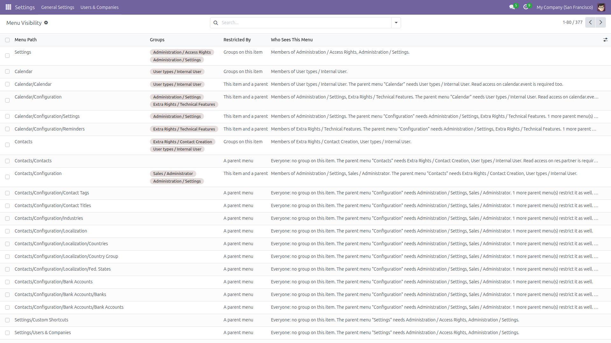
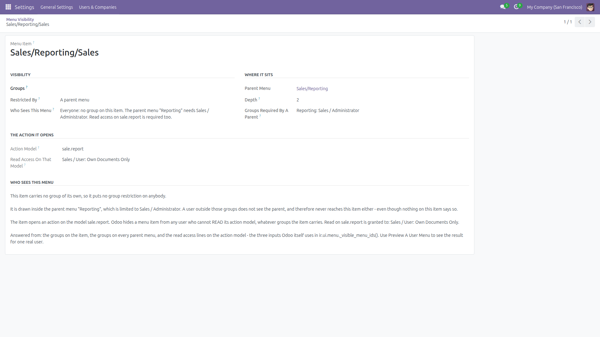
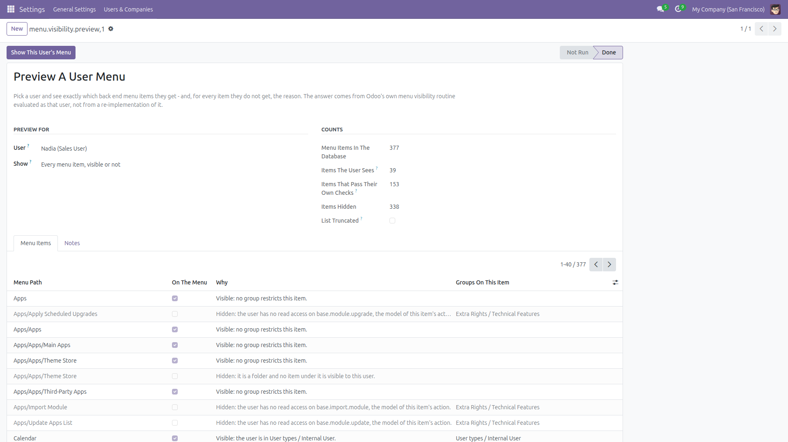
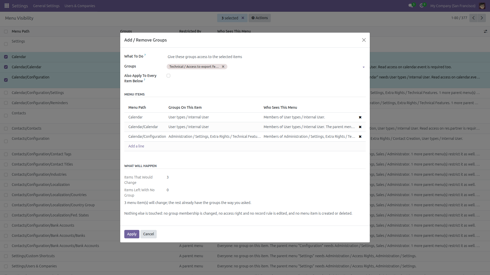
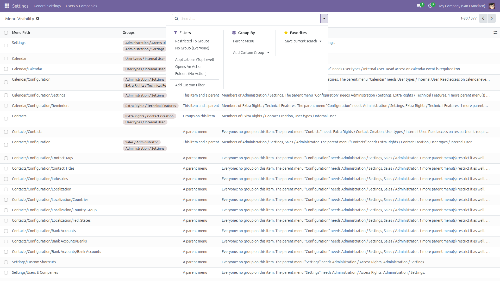

Menu Visibility by Group
Who sees each menu item — and how to change it
Hiding a menu from a group today means turning on developer mode, opening Settings / Technical / User Interface / Menu Items, finding the item and editing a Groups field with no idea who could see it before, or who can see it now. This module replaces that with one screen: every back end menu item, the groups on it, a plain sentence answering “who sees this menu?”, inline editing, a bulk add/remove wizard, and a preview of any user’s menu.
Free and open source (LGPL-3), Odoo 14.0 through 19.0.
- The whole menu tree on one page — every item under its own parent, with its full path, so you never have to expand anything to find what you are looking for.
- Groups editable in the list — click the Groups cell, add or remove a group, save. No developer mode, no Technical menu.
- A plain answer per item — “Members of Sales / Administrator”, “Everyone (no group on this item) + the parent menu Reporting needs Sales / Administrator + read access on sale.report”. The full reasoning is on the item’s form.
- Inherited restrictions made visible — a Restricted By column that says whether the limit comes from the item, from a parent menu, or from both. This is the part the standard Menu Items form does not show at all.
- Bulk add / remove — select several items, Actions → Add / Remove Groups, optionally down the whole sub-tree. Before you apply, it tells you how many items will really change and how many will be left with no group at all.
- Preview a user menu — pick a user, get the items they really see, and for everything else the reason: “limited to Sales / Administrator and the user is in none of them”, “no read access on account.move”, “the parent menu Accounting is hidden from this user”.
- The caches are cleared for you — menu visibility is answered from a cache keyed on the user’s groups. Change the groups without clearing it and the change looks like it did nothing until the server restarts. This module clears it after every change, including the change written from the group side (
res.groups → Access Menu).
- Filters that answer real questions — restricted to groups, no group at all, applications, items that open an action, folders; search by group or by parent menu; group by parent menu.
- Administrator only — every screen, every model and every field this module adds is restricted to Administration / Settings (
base.group_system), the group Odoo itself requires to write a menu item. A user outside that group cannot even read back the answers.
How “who sees this menu” is worked out
Odoo hides a back end menu item for three different reasons, and this screen reports all three, because only the first one is visible in the standard form:
- The groups on the item. A user in none of them never sees it. An item with no group puts no restriction of its own.
- The groups on a parent menu. A menu item is only ever drawn inside its parent, so a user shut out of the parent never reaches the child — even though nothing on the child says so. The column names the parent and its groups.
- Read access on the action’s model. When an item carries an action, Odoo hides it from anybody who cannot READ the model that action opens, whatever groups the item carries. The screen names the model and the groups an access control line grants read on it.
A folder is a fourth case, handled by Odoo itself: a menu with no action is only drawn when at least one item below it is visible, so a folder that is empty for a given user disappears on its own. The preview says so on the line.
The preview does not re-implement any of this: it calls ir.ui.menu._visible_menu_ids() evaluated as the chosen user — Odoo’s own routine — and then applies the parent-chain rule the web client applies when it builds the menu tree. That is why the preview and the real menu agree.
Screenshots

Every back end menu item in tree order: its full path, the groups on it (editable right there), where the restriction comes from, and a plain answer to who sees it.

One item in full: it carries no group of its own, but its parent Reporting is limited to Sales / Administrator, and its action opens sale.report, which only Sales / User can read. Three reasons, all named.

Preview a user menu: 39 items drawn out of 377, and a reason on every hidden line. “Items that pass their own checks” minus “items the user sees” is exactly the set kept out by a hidden parent.

Select several items and add or remove a group across all of them, optionally down the whole sub-tree. The count of what will really change is shown before you apply.

Ready-made filters: restricted to groups, no group at all, applications, items that open an action, folders — plus group by parent menu.
Installation
- Copy the module into your addons path, or install it from the Apps list.
- Open Apps, remove the “Apps” filter, search for Menu Visibility by Group and click Install.
- Only the standard
base module is required.
Configuration
- No configuration is needed — both screens work as soon as the module is installed.
- Access is restricted to the Administration / Settings group. No other user can open either screen, and Odoo’s own access rules already stop anybody else from writing a menu item.
- Developer mode is not required. The two menu entries sit under Settings, not under the Technical menu.
Usage
- Go to Settings → Users & Companies → Menu Visibility.
- Find the item — type part of its name, or filter on Restricted To Groups / No Group (Everyone), or group by parent menu.
- Read the Who Sees This Menu column. Open the item to get the full reasoning, including the parent menu and the action model.
- To change it: edit the Groups cell in the list, or tick several rows and use Actions → Add / Remove Groups. Tick Also apply to every item below to hit a whole sub-tree.
- Check the result with Settings → Users & Companies → Preview A User Menu: pick the user, press Show This User’s Menu, and switch Show between what they see, what is hidden, and everything.
- Your own menu bar is drawn from a cache too. After a change that affects you, use the Reload Interface button on the result screen (or press F5).
Limitations, stated up front
- It covers back end menu items (
ir.ui.menu). Website menus, portal pages, buttons inside a form and fields hidden by groups= are different mechanisms and are not touched.
- The preview is computed with developer mode off. An administrator browsing with developer mode on sees the extra technical items on top of what the preview lists, and the Notes tab says so.
- Groups placed on the action record itself are not part of Odoo’s menu visibility computation, so they are not part of the answer. What decides an action menu is read access on its model, and that is what is reported.
- The screen edits menu visibility only. It never creates, renames or deletes a menu item, never changes a user’s group membership, and never edits an access right or a record rule. Creating and deleting are switched off in the views on purpose.
- Removing the last group from an item makes it visible to everyone who can reach its parent — that is what “no group” means in Odoo. The wizard counts those items and warns before you apply.
- In a multi-worker deployment the other workers pick the cache invalidation up when the transaction commits, through the registry signalling Odoo already uses for it — not instantly, but without a restart.
- The preview lists up to 3 000 menu items and says so if it had to stop there; the counters stay exact. A full Odoo install is around 700, so this is a safety net rather than a real limit.
- Items are listed under their parent, but sibling items come out in database order rather than in the sequence order the real menu bar uses. Add the optional Sequence column and sort on it if that matters to you.
- The Menu Path column stops at six levels and ends in
... beyond that — it uses Odoo’s own path builder, which has that limit. No real menu tree is that deep.
- If this screen ever cannot read a menu’s action, it says so on the line instead of reporting the item as a folder. It never turns “I could not check” into “there is nothing to check”.
- On Odoo 19.0 the field is called
group_ids instead of groups_id; the module reads the name from the registry, so it behaves identically on all six series.
License: LGPL-3 · Source on GitHub · Issues and contributions welcome.